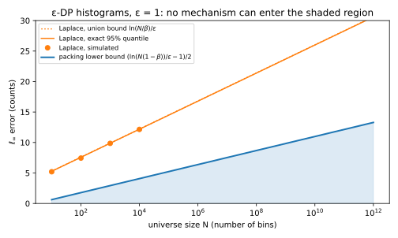
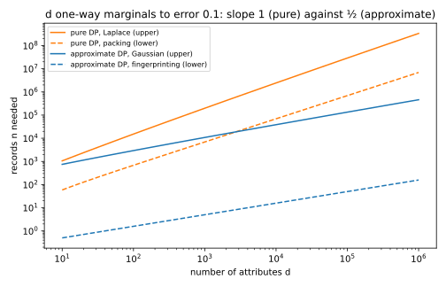
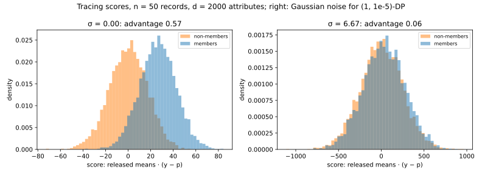
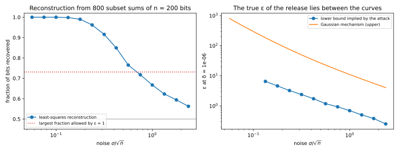

26 Lower bounds: what privacy costs
26.1 Why this matters
Someone hands you a design for a private release: a histogram over a million locations with a maximum error of five records at \(\varepsilon = 1\), say. Before reading their code, you can check whether that accuracy is possible at all. The earlier chapters gave upper bounds, what one mechanism achieves. A lower bound says that no mechanism satisfying differential privacy (DP) can do better. When it matches a known mechanism, that mechanism is optimal, and more accuracy can only come from more data or less privacy. When a claim beats a lower bound, the claim is wrong.
How can anything be said about every mechanism, when you can’t try them all? By using only the two things you know about it: it is accurate, and it is private. Accuracy is an attack: an accurate output reveals something about the data, which of many datasets was used, whether a person is in it, what their secret bits are. DP caps every attack. If an accurate mechanism would hand an attacker more than DP allows, it can’t be both, and solving that clash for the error or for the number of records \(n\) gives the bound. Throughout, the error is at most \(\alpha\) with probability at least \(1 - \beta\), and the examples use \(\varepsilon = 1\), \(\beta = 0.05\) and, for approximate DP, \(\delta = 10^{-6}\).
26.2 Pure DP pays for the number of candidates
Suppose the output must point to one of \(m\) candidates, such as the most common of a million ZIP codes. For each candidate there is a dataset on which an accurate answer points to it with probability at least \(1 - \beta\). Now run the mechanism on one reference dataset instead, say the empty one. Its output probabilities add up to 1, so most candidates get only a small share. But pure DP extended to datasets \(k\) records apart (group privacy, Post-processing, group privacy and composition) says no event becomes more than \(e^{k\varepsilon}\) times less likely, so every candidate keeps a share of at least about \(e^{-k\varepsilon}\) on the reference. A budget of 1 can’t cover \(m\) such demands unless \(k\) is large. This counting argument is packing: if each candidate’s dataset is within \(k\) records of the reference, then \[k \ge \frac{\ln\big(m(1 - \beta)\big)}{\varepsilon}. \tag{26.1}\]
Two consequences follow under add/remove neighbours. To report the mode of \(N\) elements reliably, the top element must lead by at least \(\ln(N(1 - \beta))/\varepsilon\) records. And a histogram accurate to \(\alpha\) in every bin can find a spike of height more than \(2\alpha\), so any \(\varepsilon\)-DP histogram over \(N\) bins has \[\alpha \ge \frac12\left(\frac{\ln\big(N(1 - \beta)\big)}{\varepsilon} - 1\right). \tag{26.2}\] The Laplace histogram has error at most \(\ln(N/\beta)/\varepsilon\), since each of \(N\) noises exceeds \(\alpha\) with probability \(e^{-\alpha\varepsilon}\), and report-noisy-max (Selection) finds the mode at a lead of the same order. Both grow like \(\ln N/\varepsilon\), so both are optimal within a factor of about 2 (Figure 26.1). The factor is mostly slack in the argument: the argument counts only the reference output’s mass inside candidates’ regions, but for Laplace that output is pure noise around zero and almost none of it lands in any region. That wasted mass is the factor of 2.
For \(N = 10^6\) locations, the most common one must lead by at least 13.76 records before any \(\varepsilon\)-DP mechanism can report it reliably; report-noisy-max needs 18.44. Every \(\varepsilon\)-DP histogram has, at the 95% level, an error of at least 6.38 in some bin; Laplace has 16.79.

Packing needs \(\delta = 0\). With \(\delta > 0\), group privacy over \(k\) records carries an additive slack that grows with \(k\), while the share \(e^{-k\varepsilon}\) shrinks; past about \(\ln(1/\delta)/\varepsilon\) records (13.82 at \(\delta = 10^{-6}\)) the slack swamps it and the argument demands nothing. That is not a weak proof but a real escape. The stability-based histogram (Vadhan 2017) adds noise only to non-empty bins and releases one only if its noisy count clears a threshold of order \(\ln(1/\delta)/\varepsilon\). Empty bins are never released, so nothing pays for the \(N\) bins, and its error doesn’t grow with \(N\). For a huge, mostly empty universe, approximate DP is how you escape the \(\ln N\).
26.3 How many records privacy costs
An error of 6 records is large in a dataset of 50 and negligible in a million, so dividing by \(n\) turns a bound on error into a bound on records. That lets you compare privacy’s cost with one you pay anyway, sampling error. For a histogram, an error of \(\alpha\) in every frequency needs \[n \ge \frac{\ln\big(N(1 - \beta)\big) - \varepsilon}{2\alpha\varepsilon} \tag{26.3}\] records under \(\varepsilon\)-DP, while sampling alone needs up to \(\ln(2N/\beta)/(2\alpha^2)\). The private term grows like \(1/\alpha\) and the statistical one like \(1/\alpha^2\), so privacy adds a term that dominates only for coarse answers at strong privacy, \(\alpha \gtrsim \varepsilon\). Over \(10^6\) cells to within \(\alpha = 0.1\), privacy needs at least 64 records and sampling up to 875; at \(\alpha = 0.01\), 638 and 87,522.
With many attributes, pure and approximate DP part ways. To release the means of \(d\) yes/no attributes, coded \(\pm1\), each within \(\alpha\), a pure-DP mechanism faces \(2^d\) candidates, one per corner of the cube, and packing charges \(\ln 2^d\): about \(d\ln 2/(\alpha\varepsilon)\) records, linear in \(d\). The Gaussian mechanism needs only \(2\sqrt d\,z/(\mu\alpha)\), where \(z\) is the normal quantile with tail \(\beta/(2d)\) and \(\mu\) is the largest ratio of sensitivity to noise the exact calibration allows (0.2367 at \(\varepsilon = 1\), \(\delta = 10^{-6}\); The Laplace and Gaussian mechanisms). The \(\sqrt d\) comes from calibrating to the \(\ell_2\) sensitivity, \(2\sqrt d/n\), instead of the \(\ell_1\) sensitivity, \(2d/n\), which is possible only with \(\delta > 0\). There is no contradiction with packing, which stops working at \(\delta > 0\).
Is \(\sqrt d\) itself unavoidable, or could a cleverer mechanism do better? Packing can’t answer, so fingerprinting (Bun, Ullman & Vadhan 2014) looks only at neighbours, where \(\delta\) stays small. Draw a random dataset and release its means accurately. To follow the true means the release must follow the data, so it correlates with the records, by a total amount of order \(d\) shared among \(n\) records: each member’s correlation with the release is of order \(d/n\). A stranger’s correlation is random, with spread of order \(\sqrt d\). DP lets a member stand out from a stranger by only a constant multiple of that spread, so \(d/n \lesssim \sqrt d\), which is \(n \gtrsim \sqrt d\). The tight version is \(n\) of order \(\sqrt{d\ln(1/\delta)}/(\alpha\varepsilon)\) (Steinke & Ullman 2016): the Gaussian mechanism is optimal up to a logarithm.
| Pure DP, packing (lower) | Pure DP, Laplace (upper) | Approximate DP, Gaussian (upper) | |
|---|---|---|---|
| \(d = 100\) | 683 | 15,202 | 2,941 |
| \(d = 1000\) | 6,921 | 198,070 | 10,836 |
| \(d = 10{,}000\) | 69,304 | 2,441,215 | 38,570 |
| \(d = 100{,}000\) | 693,137 | 29,017,315 | 134,299 |
In Table 26.1 the packing column grows tenfold with each tenfold increase in \(d\), the Gaussian column only about \(\sqrt{10}\)-fold, so it must cross below: from \(d = 2731\) attributes on, the Gaussian mechanism needs fewer records than any pure-DP mechanism (Figure 26.2). A model with a few thousand parameters is already past that point, which is one reason private machine learning uses the Gaussian mechanism.

Use the fingerprinting bound for its rate, not its numbers: in the simple form the full edition proves, it says \(n \ge 5.0\) at \(d = 1000\), against 10,836 for the Gaussian mechanism. Its \(\delta\) term is harmless only for small \(\delta\), and that is no artefact: publishing each record with probability \(\delta\) is \((0, \delta)\)-DP, so with \(\delta\) near \(1/n\) no bound of this kind could hold. And “privacy is only an additive term” fails for small subgroups, where \(n\) is the subgroup’s size.
26.4 The lower bound is a membership inference attack
The fingerprinting argument is an attack you can run. In 2008 Homer et al. showed that from the published allele frequencies of a genome-wide association study you could tell whether a given person’s DNA was in it, and their test is, up to details, the fingerprinting score. Given the released means \(\hat q\) of \(d\) attributes, with Gaussian noise \(\sigma\) per coordinate, the population means \(p\) and a target record \(y\), the attacker computes \(Z(y) = \langle\hat q, y - p\rangle\) and says “member” when it is large. Each member pulls the release towards its own record by \(1/n\) of its deviation from the population, so members’ scores are shifted up; a stranger’s record is independent of the release, so its score is centred at zero. With attribute means drawn uniformly, the shift and the spread of the scores are \[\text{gap} = \frac{2d}{3n}, \qquad \text{variance} = d\left(\frac2{15} + \frac{8}{15n} + \frac{2\sigma^2}3\right). \tag{26.4}\] The ratio of gap to spread decides the attack. Without noise it is of order \(\sqrt d/n\), so tracing works once \(d\) is large next to \(n^2\). Noise adds \(2\sigma^2/3\) to the variance per attribute, and the ratio becomes of order \(\sqrt d/(n\sigma)\), so the attack fails once \(\sigma \gg \sqrt d/n\). That is the order of noise the Gaussian mechanism adds, as it must be for a mechanism both private and as accurate as fingerprinting allows.
The full edition releases the means of \(n = 50\) records with \(d = 2000\) attributes. Without noise the gap is 26.67 and the spread 16.97, and a quarter of the members (a true positive rate (TPR) of 0.242) are identified at a false positive rate (FPR) of 1%. With the noise of a \((1, 10^{-5})\)-DP Gaussian mechanism, \(\sigma = 6.67\), the TPR at 1% FPR drops to 0.014. DP guarantees no more: any test fires on members at most \(e^\varepsilon\) times as often as on strangers, plus \(\delta\), so \(\mathrm{TPR} \le e^\varepsilon\,\mathrm{FPR} + \delta = 0.0272\). The attack fades around \(\sigma = \sqrt d/n = 0.89\) (Figure 26.3, Figure 26.4).


So aggregates are not safe because they are aggregates: what protects members is the ratio of \(n\) to \(\sqrt d\), or noise. This is the attack of Membership inference on statistics instead of models, and it is reported the same way, as TPR at a low FPR, because identifying a few people with confidence is already a failure. When auditing with this score, take \(p\) from a separate reference sample: estimating it from the release itself subtracts part of each member’s own pull and weakens the signal.
26.5 Reconstruction: why answers must carry \(\sqrt n\) noise
Reconstruction attacks recover almost all of \(n\) secret bits from about \(n\) random subset counts whose error grows more slowly than \(\sqrt n\) (Dinur & Nissim 2003): any set of bits that fits such accurate answers must agree with the truth almost everywhere. Read as a lower bound, this says such a release can’t be private. Guessing one person’s bit is a test between two neighbouring datasets, so DP caps how often any guess is right, and the fraction recovered, an average of such guesses, obeys the same cap: at most \((e^\varepsilon + \delta)/(e^\varepsilon + 1)\), 73.11% at \(\varepsilon = 1\). Turned around, recovering a fraction \(r\) proves \[\varepsilon \ge \ln\frac{r - \delta}{1 - r}. \tag{26.5}\] So answers to that many counting queries need noise of order \(\sqrt n\), and the Gaussian mechanism matches: changing one bit moves each of \(k\) answers by at most 1, an \(\ell_2\) distance of at most \(\sqrt k\), so it adds noise of order \(\sqrt k\) per answer. Laplace, calibrated to the \(\ell_1\) distance \(k\), pays of order \(k\).
The full edition answers 800 random subset sums of 200 bits with Gaussian noise and decodes by least squares. Recovering 0.9607 of the bits proves \(\varepsilon \ge 3.20\). The attack recovers 0.8058 at noise \(0.5\sqrt n\), above the 73.11% an \(\varepsilon = 1\) mechanism allows, and 0.6710 at \(\sqrt n\), below it, so an \(\varepsilon = 1\) mechanism needs noise between the two (Figure 26.5).

An attack proves only a lower bound on \(\varepsilon\). Recovering 67% of the bits at \(\sigma = \sqrt n\) proves \(\varepsilon \ge 0.71\), but least squares is not the best attack, so it doesn’t make the release \((0.71, 10^{-6})\)-DP; the mechanism’s analysis guarantees only \(\varepsilon \le 11.00\). The true loss lies between, and stronger attacks narrow the gap, which is what privacy auditing does.
26.6 Code
Checking a claimed accuracy is a few lines of arithmetic: the pure-DP histogram floor and the Laplace error, the records needed for \(d\) means under pure DP and with the Gaussian mechanism, and the \(\varepsilon\) a reconstruction proves.
from math import exp, log, sqrt
from statistics import NormalDist
PHI = NormalDist().cdf
def histogram_error_floor(bins: int, eps: float, beta: float) -> float:
"""Smallest max-bin error any eps-DP histogram can have with probability 1 - beta (packing)."""
return max(0.0, (log(bins * (1 - beta)) / eps - 1) / 2)
def laplace_histogram_error(bins: int, eps: float, beta: float) -> float:
"""Max-bin error the Laplace histogram reaches with probability 1 - beta (exact)."""
return -log(1 - (1 - beta) ** (1 / bins)) / eps
def means_records_floor_pure(d: int, eps: float, alpha: float, beta: float) -> float:
"""Records any eps-DP release of d means in [-1, 1] needs for max error alpha (packing)."""
return ((d * log(2) + log(1 - 2.0**-d) + log(1 - beta)) / eps - 1) / alpha
def gaussian_mu(eps: float, delta: float) -> float:
"""Largest sensitivity / sigma for which the Gaussian mechanism is (eps, delta)-DP."""
lo, hi = 1e-6, 100.0
for _ in range(200):
mu = (lo + hi) / 2
d = PHI(mu / 2 - eps / mu) - exp(eps) * PHI(-mu / 2 - eps / mu)
lo, hi = (mu, hi) if d < delta else (lo, mu)
return lo
def means_records_gaussian(d: int, eps: float, delta: float, alpha: float, beta: float) -> float:
"""Records the Gaussian mechanism needs for the same release (an upper bound)."""
z = NormalDist().inv_cdf(1 - beta / (2 * d))
return 2 * sqrt(d) * z / (gaussian_mu(eps, delta) * alpha)
def epsilon_proved(recovered: float, delta: float) -> float:
"""Lower bound on epsilon from an attack that recovers this fraction of uniform secret bits."""
return log((recovered - delta) / (1 - recovered))
print(f"{histogram_error_floor(10**6, 1.0, 0.05):.2f} {laplace_histogram_error(10**6, 1.0, 0.05):.2f}") # 6.38 16.79
print(f"{means_records_floor_pure(1000, 1.0, 0.1, 0.05):.0f} {means_records_gaussian(1000, 1.0, 1e-6, 0.1, 0.05):.0f}") # 6921 10836
print(f"{epsilon_proved(0.9607, 1e-6):.2f}") # 3.20Back to the opening claim: a pure \(\varepsilon = 1\) histogram over \(10^6\) locations with maximum error 5 at 95% confidence is impossible, since no mechanism goes below 6.38. Unless the design uses \(\delta > 0\) and exploits sparsity, ask what it is really doing. The full edition’s script, lower_bounds.py, computes every number in this chapter and runs the attacks:
uv run python code/part03-dp-foundations/lower_bounds.py26.7 Cheat sheet
| Result | Statement | Matching mechanism |
|---|---|---|
| Packing (pure DP) | \(m\) candidates within \(k\) records of one dataset: \(k \ge \ln(m(1 - \beta))/\varepsilon\) | — |
| Mode over \(N\) elements (pure) | Lead \(k \ge \ln(N(1 - \beta))/\varepsilon\) | Report-noisy-max |
| Histogram, \(\ell_\infty\) (pure) | \(\alpha \ge \frac12(\ln(N(1 - \beta))/\varepsilon - 1)\) | Laplace: \(\alpha \le \ln(N/\beta)/\varepsilon\) |
| Packing under \(\delta > 0\) | Forces at most \(k \approx \ln(1/\delta)/\varepsilon\) | Stability-based histogram |
| Histogram, records | \(n \ge (\ln(N(1 - \beta)) - \varepsilon)/(2\alpha\varepsilon)\); sampling needs \(\approx\ln(2N/\beta)/(2\alpha^2)\) | Laplace |
| \(d\) means (pure) | \(n \gtrsim d\ln2/(\alpha\varepsilon)\) | Laplace: \(n = 2d\ln(d/\beta)/(\alpha\varepsilon)\) |
| \(d\) means (approximate) | \(n\) of order \(\sqrt{d\ln(1/\delta)}/(\alpha\varepsilon)\) (fingerprinting) | Gaussian: \(n = 2\sqrt d\,z/(\mu\alpha)\) |
| Tracing score | Gap \(2d/(3n)\); variance \(d(\frac2{15} + \frac8{15n} + \frac{2\sigma^2}3)\) | Defeated by \(\sigma \gg \sqrt d/n\) |
| Any membership test | \(\mathrm{TPR} - \mathrm{FPR} \le \frac{e^\varepsilon - 1 + 2\delta}{e^\varepsilon + 1}\); \(\mathrm{TPR} \le e^\varepsilon\mathrm{FPR} + \delta\) | — |
| Reconstruction | Recovering a fraction \(r\) proves \(\varepsilon \ge \ln\frac{r - \delta}{1 - r}\) | Gaussian with \(\sigma \propto \sqrt k\) |
Rules of thumb
- Pure DP pays \(\ln(\text{number of candidates})/\varepsilon\) in error, linear in \(d\) for \(d\)-dimensional outputs; approximate DP pays about \(\sqrt d\).
- Released aggregates over many attributes leak membership; noise of order \(\sqrt d/n\) stops it.
- An attack bounds \(\varepsilon\) from below; only the mechanism’s analysis bounds it from above.
26.8 Further reading
- Vadhan, “The Complexity of Differential Privacy” (2017), §5: packing, fingerprinting and reconstruction lower bounds side by side, and the stability-based histogram.
- Dwork, Smith, Steinke & Ullman, “Exposed! A Survey of Attacks on Private Data” (Annual Review of Statistics and Its Application, 2017): reconstruction and tracing attacks for a statistics audience.
- Steinke & Ullman, “Between Pure and Approximate Differential Privacy” (Journal of Privacy and Confidentiality, 2016): the tight \(\sqrt{d\ln(1/\delta)}\) bound for attribute means.
Derivations. Every result in this chapter is derived step by step in the full edition’s chapter.